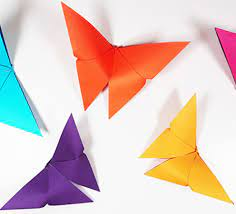
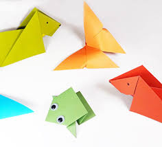
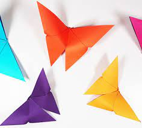
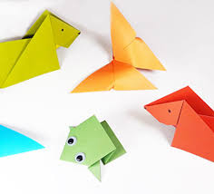

Origami Designs
 



Origami is the art of paper-folding. Its name derives from Japanese words ori (“folding”) and kami (“paper”). Traditional origami consists of folding a single sheet of square paper (often with a colored side) into a sculpture without cutting, gluing, taping, or even marking it.
- Origami can be used to make several animal-like structures out of paper
- One very important function origami plays is in Japanese Wedding Rituals. Origami Butterflies and other simple designs are often given along with gifts and paper wrapping, but most important is the presentation of 1000 paper cranes.
- The first book ever published about Origami was entitled “Sembazuru Orikata” (Thousand Crane Folding), and was largely about the timeless custom of folding a 1000 paper cranes for traditional weddings.
- As a good luck token for all the future dangers to be faced, Samurais commonly used to present gifts of origami to each other. These gifts were usually a type of ceremonial origami, folded from multiple pieces of paper into intricate shapes and presented along with a strip of dried fish or meat, to signify “good wishes”.